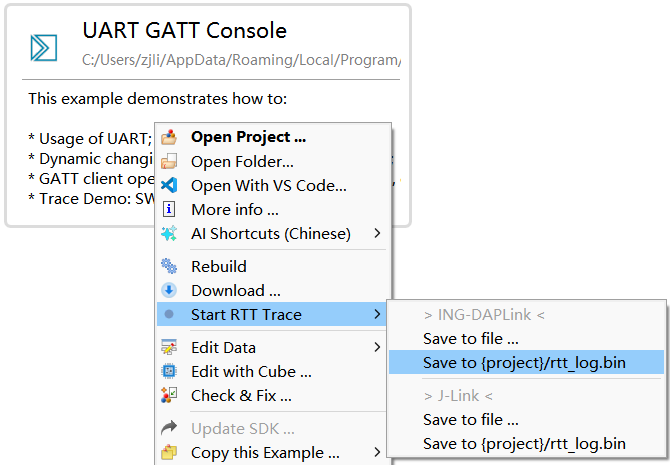
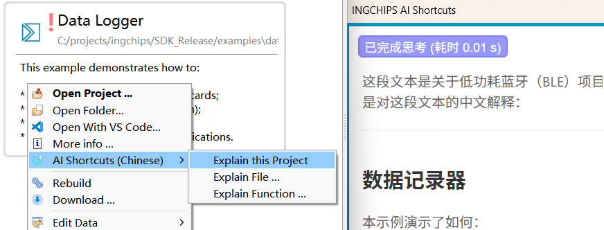
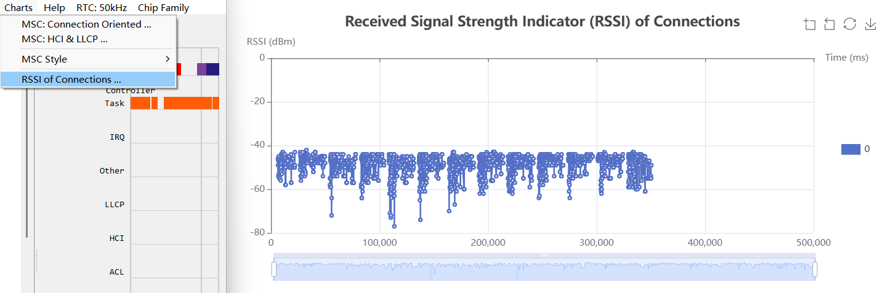

Highlights
- AI 捷径（AI Shortcuts）
- ING-DAPLink
- USB Host Demo
- ING916XX 使用内部 RC 为主时钟时，如果要使用省电模式，则 RC 频率暂时只能配置为 24MHz。
- ING916XX 降低主频（HCLK）存在风险：低功耗电流异常，连接容易断开。
v8.5.5
1. 软件包
-
[修正] Controller:
LL_PHY_RSP的生成流程当用
gap_set_phy设置首选 PHYS 之后，LL_PHY_RSP会被填写为对方的 PHYS 与本端首选 PHYS 的交集， 可能导致TX_PHYS或RX_PHYS为0。现已改为直接填写本端首选 PHYS。 -
[修正] Host 配置项
STACK_CONNECTION_UPDATE_PARAMETER_REPLY_USERv8.5.4 中，调用
btstack_config(options)（options非0），等效为btstack_config(options | STACK_CONNECTION_UPDATE_PARAMETER_REPLY_USER)。现已修复。
2. 工具
-
[更新] Wizard: RTT log 工具
rtt_logger.py支持通过 DAPLink 抓取、保存 RTT log。现在 SDK 提供了一个 Windows 命令行版本的工具daplink_rtt_logger，同rtt_logger.py一样， 命令行参数完全兼容 SEGGER J-Link RTT 工具。这个工具同 J-Link RTT 一起集成到了 Wizard 右键菜单中：
如图，这项菜单功能是为了配合 RTT Trace，只抓取 UP Channel 0。如果需要抓取其它 Channel，请通过命令行调用。
v8.5.4
1. 软件包
-
[修正] 在
app_main里调用platform_get_gen_os_driver()会返回NULL由 v8.5.0 引入，现已修复。
-
[更新]
platform_create_us_timer旧版本的
platform_create_us_timer是基于 RF 调度接口实现，其含义为“在指定时间占用射频 1μs”，使用时存在多种限制，如：- 当某个时间段内正在进行扫描时，无法在这个时间段内创建定时器；
- 回调函数内不允许递归调用
platform_create_us_timer。
现在
platform_create_us_timer已经重新设计，没有上述限制。使用时一般会在回调函数里清除定时器句柄，因此新增
platform_create_us_timer2。 -
[更新] Controller：更好地调度 Scan/Init/Adv/Conn 多任务
新版本增强了多任务调度能力，射频利用率明显提升。
-
[新增] Host 配置项：
STACK_CONNECTION_UPDATE_PARAMETER_REPLY_USER详见“干预连接参数请求流程”。
-
[新增] Host 配置项：
STACK_DEVICE_DATABASE_SUPPORT_MORE_DEVICES打开这项配置后，Host 最多支持存储
KV_HOST_KEY_END - KV_HOST_KEY_START + 1个配对设备信息。 而内置的kv存储模块存储空间有限，此配置必须配合自定义的kv存储模块使用。 -
[新增] API
ll_register_hci_conn_pdu_previewer与现有的
ll_register_hci_acl_previewer相比，conn_pdu_previewer回调可以监控所有的 PDU（包括 ACL/LLCP/空包）， —— 无论 CRC 是否正确。该回调还能获取 PDU 对应的原始 RSSI。
2. 库函数
-
[修正] ING918 EFlash: 开启编译优化后的潜在问题
-
[更新] ING918 EFlash: 增加
flash_read_uid46
3. 示例
-
[新增] CherryUSB 移植与演示
这个新示例将 CherryUSB 移植到 ING916，并演示 USB Host/Device 的用法。 该示例只能用 Keil μVision 5 编译，不能用 Keil μVision 4 编译。
4. 工具
-
[更新] AI Shortcuts 可选用其它具备 OpenAI 兼容接口的 LLM 服务器
Foundry、Ollama、llama.cpp 等本地运行的 LLM 推理引擎也提供了 OpenAI 兼容接口，因此也能选用。以在本机运行 Local Foundry 为例，各设置如下：
-
URL: http://localhost:5273/v1/chat/completions
这里的端口号可通过
foundry service start或foundry service status命令确认。 -
模型：从 Foundry 支持的模型中选择。比如选择“Qwen2.5 Coder 1.5B 的 CUDA 加速模型”时，这里须填写其全称
qwen2.5-coder-1.5b-instruct-cuda-gpu。 -
API Key：任意填写几个字符，如
123。
-
-
[更新] Tracer: 打开大文件时，允许用户指定只读取部分内容
-
[更新] Wizard: 填加了几个命令行参数，详见
--help -
[更新] Wizard: 右键菜单集成 AI Shortcuts 功能
通过右键菜单可直接使用 AI Shortcuts 解释项目、文件或者函数。

-
[更新] Tracer: 导出 RSSI 统计图

-
[更新] Downloader: 通过 USB 下载时，可强制使用 Ext bootloader
v8.5.3
1. 软件包
-
[修正] ING918:
platform_reset死机这是 v8.4.23 引入的问题，现已修复。
-
[更新]
gap_set_connection_parameter_range：支持拒绝连接参数请求当配置了特殊的无效参数时，Host 将拒绝所有的连接参数请求。
2. 库函数
-
[更新] ING918 Eflash: 增加
flash_get_die_info、flash_get_adc_calib_data、flash_read_uid等新接口对于 ING918、ING916 等系列芯片，都可以利用相同的
flash_read_uid接口获得唯一的 ID 作为芯片标识。
3. 工具
- [更新]
afx_tool：改进call-stack功能。
v8.5.2
1. 软件包
-
[修正] ING918: 程序启动时分配的栈空间过大
ING918 mini 和 noos_mini 软件包程序启动时（调用
app_main时）分配的栈空间过大， 超过了SYSCTRL_RESERVED_MEM_BLOCKS所指定的内存范围，如果在app_main内调用SYSCTRL_SelectMemoryBlocks(SYSCTRL_RESERVED_MEM_BLOCKS)会导致栈内容异常、死机。此问题由 v8.5.0 引入。如果不方便升级，可将
app_main内的SYSCTRL_SelectMemoryBlocks移动到其它位置， 如setup_profile。 -
[修正]
app_main内调用kv_init会导致死机此问题由 v8.5.0 引入。如果不方便升级，可将
app_main内的kv_init移动到setup_profile。
2. 库函数
-
[更新] ING916 USB: 默认使用最大 Tx 驱动能力
可以解决连接到部分主机无法识别的问题。
3. 工具
-
[新增] AI 捷径：升级到 QWen3 模型
支持 QWen3 6 亿参数 到 320 亿参数等多种规模。使用 CPU 或者集成显卡时， 推荐使用 1.7B 到 4B 规模的模型；如果内存容量为 32GB 或更多，则可以使用 30B-A3B 小型 MoE 模型。

v8.5.1
1. 软件包
-
[修正] Controller: 意外发送 LL_PING_REQ
当已加密的连接断开后，PING 定时器保持运行。当重新连接后，如果连接未加密，定时器超时后会意外触发 LL_PING_REQ，不符合规范。现已修正。
-
[修正] Controller: 加密流程的处理
当加密流程被对方通过 LL_REJECT_EXT_IND 拒绝（如对方删除了配对信息）时，Controller 未恢复正常的通信状态，导致无法通信、
gap_disconnect不生效等现象。现已修正。如果对方通过 LL_REJECT_IND 拒绝，Controller 工作正常。
v8.5.0
1. 软件包
-
[更新] 内置 FreeRTOS 的软件包允许替换 RTOS
现在内置 FreeRTOS 的软件同 NoOS 软件包一样可以通过
app_main返回gen_os_driver_t指针。 当该指针不为空时，内置的 FreeRTOS 被替换，协议栈将使用gen_os_driver。此后，应用显然也不能使用内置的 FreeRTOS。const gen_os_driver_t gen_os_driver = ...; uintptr_t app_main() { ... return (uintptr_t)&gen_os_driver; } -
[新增]
platform_get_rtos_heap_mem这个函数返回内置 FreeRTOS 的堆空间。当替换内置的 FreeRTOS 后，开发者通过此 API 获取该内存空间。
通常情况下，可以把这块空间作为堆注册到外部的 RTOS。参考 Peripheral Console (RT-Thread)。
-
[新增]
platform_pre_suppress_cycles_and_sleep_processing从 v8.5.0 开始，睡眠时间以低速实时时钟的周期为度量单位。 为保持兼容性，原有的
platform_pre_suppress_ticks_and_sleep_processing仍然存在， 但建议改用platform_pre_suppress_cycles_and_sleep_processing。例如：原代码：
uint32_t ticks = platform_pre_suppress_ticks_and_sleep_processing(expectedTicks);更新为：
#define SYS_CLOCK_CYCLES_PER_TICK .... uint32_t cycles = platform_pre_suppress_cycles_and_sleep_processing( expectedTicks * SYS_CLOCK_CYCLES_PER_TICK); uint32_t ticks = cycles / SYS_CLOCK_CYCLES_PER_TICK;
2. 库函数
- [修正] ING916 USB: EP0 OUT 概率性故障
3. 工具
-
[新增] AI 捷径（AI Shortcuts）
详见 使用 AI。
-
[修正]
rtt_logger.py: 有时会抓取多余的数据 -
[更新] Downloader (GUI/Python)：配合 ING-DAPLink 实现自动下载
使用 ING-DAPLink 时，点击主界面的 “Load” 按钮相当于按下 ING-DAPLink 上 “Load” 按钮，可进入下载状态； 运行
icsdw.py脚本时，可自动进入下载状态。